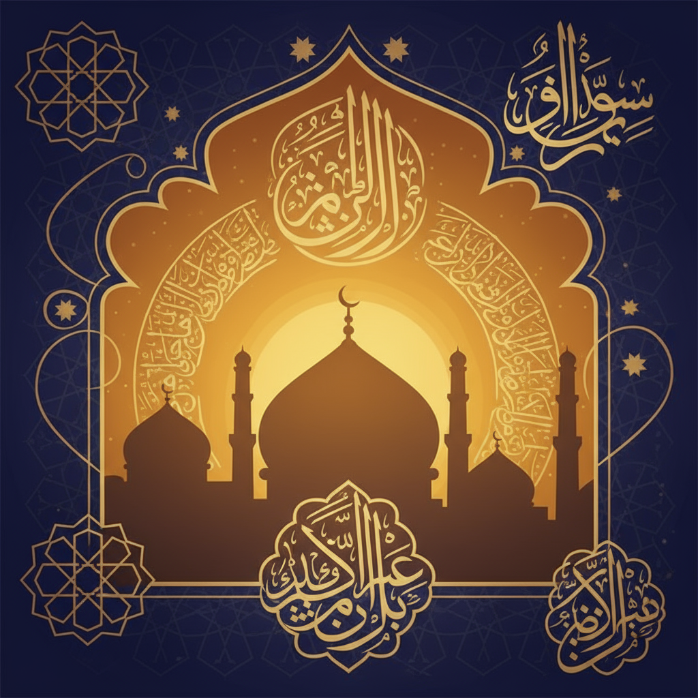
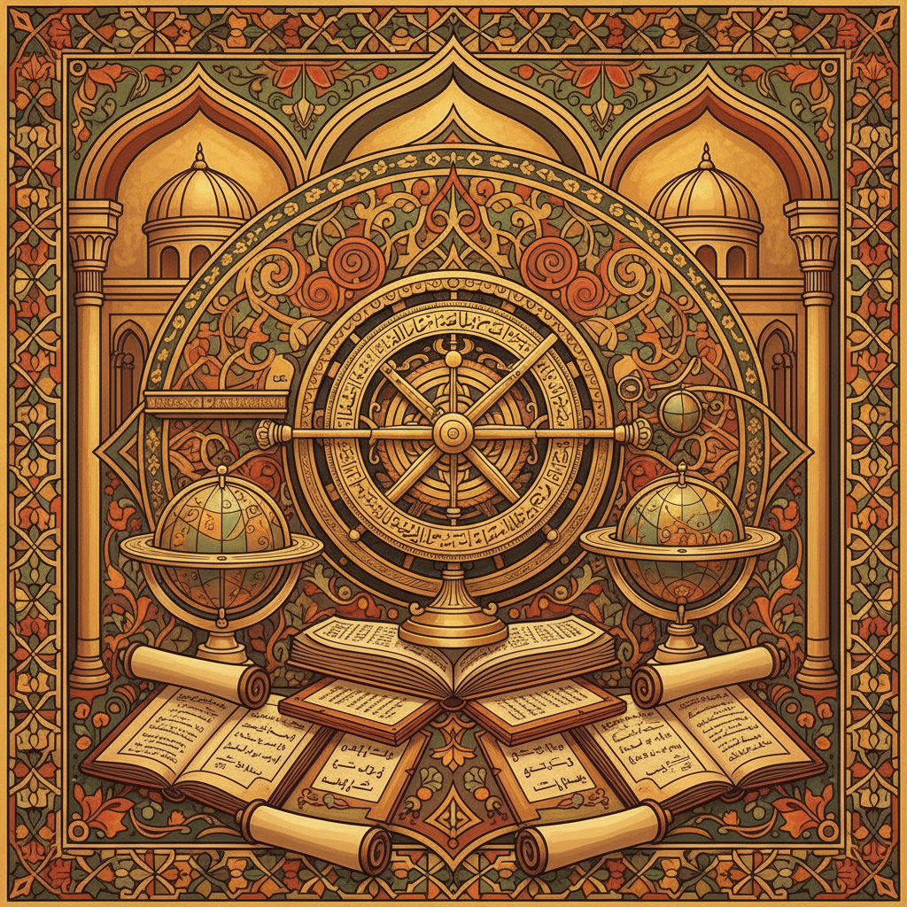
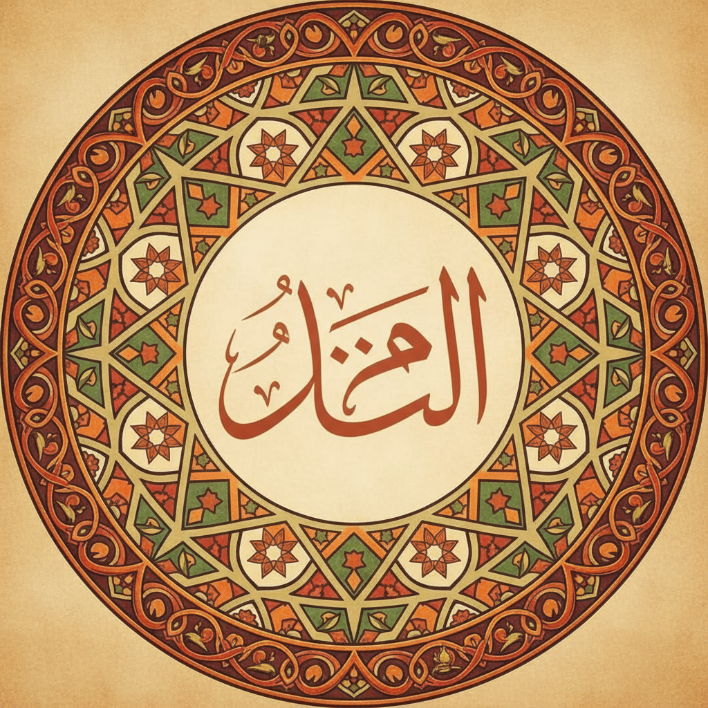

العصر الإسلامي
١٠ دقائق قراءة
العصر الإسلامي الذهبي: إنجازات غيرت مسيرة التاريخ
اكتشف كيف أثرت الحضارة الإسلامية في تطور العلم والفلسفة والطب، وتركت بصمة لا تُمحى في تاريخ الإنسانية من خلال إنجازاتها العظيمة.
 د. أحمد الزهراوي
د. أحمد الزهراوي
منذ ساعتين

العلماء العرب
١٢ دقيقة قراءة
ابن الهيثم: والد البصريات الحديثة
قصة العالم العربي الذي غيّر فهمنا للضوء والرؤية، ووضع الأسس الحديثة لعلم البصريات من خلال تجاربه المبتكرة.

د. فاطمة القرشي
منذ ٥ ساعات

التراث الثقافي
١٥ دقيقة قراءة
القهوة العربية: من بادية نجد إلى العالم
رحلة القهوة العربية من أصولها في الجزيرة العربية إلى أن أصبحت مشروباً عالمياً يجمع الناس على المحبة والتواصل.
 د. خالد البدوي
د. خالد البدوي
منذ يوم
القادة العظماء
١٨ دقيقة قراءة
صلاح الدين الأيوبي: القائد الذي وحد الأمة
قصة القائد العظيم الذي أعاد القدس إلى الحضن الإسلامي، وأسس للعدالة والتسامح في زمن الحروب الصليبية.
د. يوسف المنصوري
منذ يومين
علماء الطب
٢٠ دقيقة قراءة
ابن سينا: عبقري الطب والفلسفة
قصة العالم العربي الذي كتب "القانون في الطب" وأصبح مرجعاً طبياً لقرون عديدة في أوروبا وآسيا.
د. سارة الخوارزمي
منذ ٣ أيام
الحضارة الإسلامية
١٤ دقيقة قراءة
بيت الحكمة: منارة العلم في بغداد
قصة المكتبة العظيمة التي جمعت علماء العالم وجعلت بغداد عاصمة العلم والثقافة في العصور الوسطى.
د. محمد البغدادي
منذ ٤ أيام